This document is intended for educational purposes only. When I began learning HPLC, I struggled to find a comprehensive introductory resource. This guide is the result of combining my practical experience and skills to create a valuable starting point for others on their learning journey. My goal with this project is to provide you with the foundational knowledge I wish I had when I started. The procedures, instructions, and information contained herein are provided as a general guide for learning the principles of HPLC instrument operation and software navigation.
They are not a substitute for the official manufacturer's documentation, specific standard operating procedures (SOPs) from your laboratory, or comprehensive hands-on training. For operational use: Always consult and follow the official manufacturer's user manuals and safety guidelines for your specific instrument and software version.
Adhere to all validated laboratory-specific SOPs and quality control procedures. Ensure you have received proper training and authorization before operating any analytical instrumentation. The authors and contributors are not responsible for any errors or omissions, or for any outcomes resulting from the application of the information in this educational document.
Part 1: Introduction to Chromatography
At its core, chromatography is a physical method of separation that distributes components between two phases: a stationary phase and a mobile phase. In High-Performance Liquid Chromatography (HPLC), the mobile phase is a liquid solvent pumped at high pressure, and the stationary phase is an immobilized solid packed into a column.
Things to Remember
1. Sample preparation: Ensure that the samples are properly prepared and filtered to avoid any blockages in the HPLC system.
2.Mobile phase preparation: The mobile phase should be prepared according to the recommended guidelines and filtered using appropriate methods. It is important to check the pH and degas the mobile phase before use to prevent bubble formation in the system.
3. Column selection: The appropriate column should be selected based on the type of analyte, its properties, and the desired separation. It is important to condition the column before use to ensure optimal performance.
4. Flow rate: The flow rate of the mobile phase should be set according to the column specifications and the desired separation. It is important to avoid high flow rates that could damage the column or cause excessive backpressure.
5. Injection volume: The injection volume should be optimized based on the sample concentration and the sensitivity of the detection method.
6. Detector selection: The detector should be selected based on the analyte's properties and the required sensitivity of the detection method.
7. Calibration: It is important to calibrate the system and perform system suitability tests to ensure accurate and reliable results.
8. Safety: Always follow the manufacturer's guidelines and recommended safety protocols when operating an HPLC instrument, including the use of personal protective equipment (PPE) and proper waste disposal.
9. By considering these factors, you can help ensure that your HPLC instrument operates effectively and provides reliable results.
Instrument
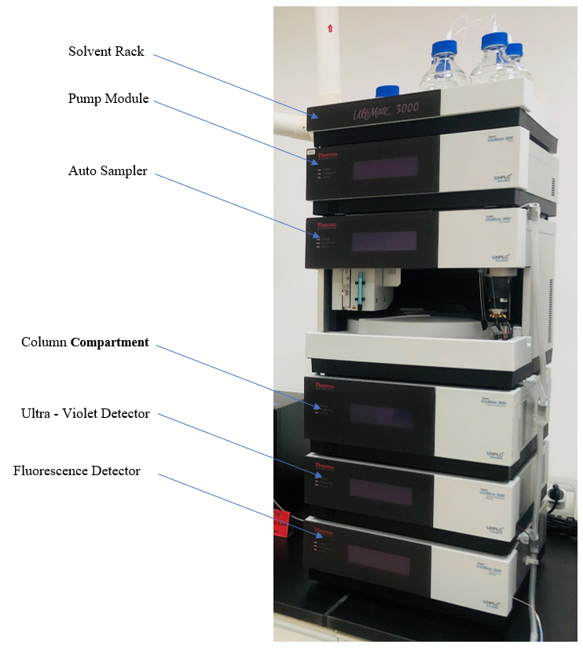
HPLC (Thermo Fisher HPLC UltiMate 3000)
Part 2: Solvent Preparation
Proper solvent preparation is crucial for successful HPLC analysis. The quality of your mobile phase directly impacts separation efficiency, column lifespan, and data reproducibility.
Solvent Selection Criteria
Purity: Use HPLC-grade or LC-MS-grade solvents with minimal impurities
Compatibility: Ensure solvents are compatible with your column chemistry and detector
UV Transparency: For UV detection, solvents should have minimal absorbance at the detection wavelength
Viscosity: Lower viscosity solvents reduce backpressure and improve flow
Mobile Phase Components
The mobile phase typically consists of two or more components:
Water: Use HPLC-grade water (18.2 MΩ·cm resistivity) for best results
Organic Modifier: Methanol or acetonitrile are most common
Buffer Components: Maintain pH and ionic strength
Additives: pH modifiers, ion-pairing agents, or screening agents as needed
Buffer Preparation
When pH control is required, prepare buffers before adding organic solvents:
Dissolve the buffer salt in HPLC-grade water
Adjust pH to the desired value using acid or base
Bring to final volume with HPLC-grade water
Filter through a 0.2 μm filter before adding organic modifier
The preparation of a buffer solution for HPLC depends on the specific requirements of the analysis. If you are using solid-state chemicals to prepare buffer solution, the buffer solution should be filtered using a 0.2-micron filter to remove any particulate matter that can interfere with the HPLC system.
Preparation of Seal Wash
To prolong the life of the pump seals and pistons by preventing the crystallization of buffer salts and the accumulation of abrasive particles.
Required Chemicals & Glassware
HPLC grade Methanol
10 ml Pipet and Pipet tips
100 ml Volumetric Flask and Cap
100ml Beaker
1.Clean the glassware with 0.2 µm filtered ultra-pure water.
2.Bring to final volume with HPLC-grade water
3.Take the beaker and wash it with some methanol (we can reuse this methanol for non-sensitive purposes.)
4.Add some methanol to a beaker. (about 15 ml)
5.Measure 10ml of Methanol and add it to the Volumetric flask
6.Mix the solution and top up the volumetric flask with filtered ultra-pure water and mix it thoroughly.
7.Clean the HPLC seal wash bottle with filtered ultra-pure water.
8.Clean the HPLC seal wash bottle with the previously made seal wash solution.
9.Add the rest of the Seal wash solution to the HPLC seal wash bottle.
Solvent Mixing and Degassing
Proper mixing and degassing are essential:
Mixing Ratios: Prepare mixtures by volume, not weight
Degassing: Remove dissolved gases using helium sparging, vacuum filtration, or online degassing
Equilibration: Allow solvents to reach room temperature before use
Adding solvents to the bottles
There are six HPLC solvent bottles in the solvent rack including one extra bottle. Five solvents should be added before starting the instrument. above-mentioned five solvents, four solvents are for analysis and one for pump cleaning purposes. Bottles are named and labeled for user-friendliness.
Common Solvents that are used in this lab for HPLC are as follows:
A – HPLC Grade Methanol (500ml)
B – HPLC Grade ACN (500ml)
C – 0.5% Formic buffer (500ml)
D – ultra-Pure water (500ml)
SMALL BOTTLE is for the Seal wash solution. Also can use 10% Methanol
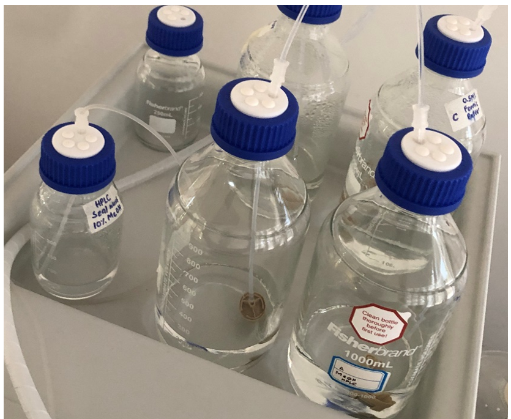
Power switch placements of the instrument
Above A, B, C, and D HPLC Bottles can be identified by the labels on the bottles (yellow circles fig 1). And the cap of the bottle can be identified by the small tag with the English letter in the liquid line/small pipeline.
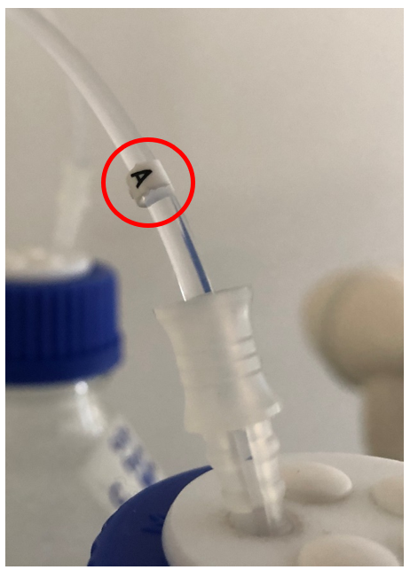
Power switch placements of the instrument
Safety Considerations
Handle solvents in a fume hood when possible
Wear appropriate personal protective equipment
Store solvents in proper containers away from heat and ignition sources
Label all solvent containers clearly with contents, concentration, and date
Part 3: Start the instrument
1.0 Instrument Startup and Initialization
1.1 Prerequisites
Ensure all power cables are securely connected to the UPS (Uninterruptible Power Supply) and wall outlets.
Verify that the instrument and computer are in a ready state for startup.
1.2 Steps
Activate the main power by switching on the UPS.
Switch on the Instrument Terminal Panel power switch.
Power on the Computer.
Proceed to the rear panels of the instrument compartments and turn on the power switches for the following modules in sequence:
Pump
Auto-sampler
Column Compartment
UV/Fluorescence Detector
Power switch placements of the instrument
Visually confirm that each module has successfully initialized.
Inspect the status indicators on all detector compartment front screens.
For each compartment, confirm the following:
The Power indicator is illuminated in Blue.
The Status indicator is illuminated in Green.
Exception: The Status indicator for the Variable Wavelength Detector (VWD) will be Red. This is expected behavior.
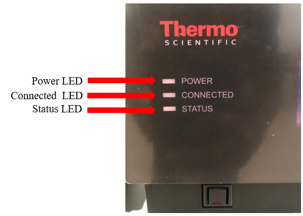
status LED lights.successful startup indicators on front screens.
1.3 Completion
The instrument and all specified compartments are powered on. The system is now initializing and is ready for the next procedure.
Part 4: Connecting the instrument
2.0 Connecting the instrument.
2.1 Prerequisites
The instrument and all compartments (Pump, Auto-sampler, Column Compartment, Detector) must be powered on.
The computer must be turned on and at the desktop screen
2.2 Steps
Log in to the computer and ensure you are at the operating system's desktop.
Launch the Service Manager:
Locate and open the Search Bar (e.g., Windows Search next to the Start Menu).
Type "Service Manager" into the search bar.
From the search results, double-click on the Service Manager application to launch it.
Service Manager in Search Bar.
Start the Instrument Controller.
Wait for the Chromeleon Service Manager window to open.
Within the Service Manager window, press the "Start Instrument Controller" button.
Chromeleon services manager window
Verify Module Connection:
On the Service Manager screen, check the connection status for each instrument compartment (this can be done after starting the Chromeleon software in next step).
Confirm that the connection indicator for the Pump, Auto-sampler, Column Compartment and and Detectors has turned Green on the front screen of the instrument.
Connection indicator is illuminated in Green
2.3 Completion
All instrument modules show a green connection status in the Chromeleon Service Manager. The system is now online and ready for method creation or sequence execution within the Chromeleon client software.
Part 5: Instrument Preparation, Purge, and Baseline Monitoring
5.0 Instrument Preparation, Purge, and Baseline Monitoring
5.1 Prerequisites
The Chromeleon software is open, and all instrument modules show a "Connected" status in the Instruments tab.
Mobile phases are prepared, degassed, and correctly placed at their respective solvent lines (A, B, C, D).
A waste container is placed in the designated area to collect purge waste.
5.2 Steps
Initialize UV Detector
In the Instruments tab, click on the UV module.
Set the desired Wavelength for analysis in the channel settings.
Turn on the UV lamp by placing a tick (✓) in the appropriate check box.
Exception: The Status indicator for the Variable Wavelength Detector (VWD) will be Red. This is expected behavior.
Note: The UV lamp requires a minimum 60-minute warm-up period to stabilize before performing analysis.
UV Detector tab
Verify Module Connection
While the UV lamp is warming up, confirm that the Pump, Sampler, and Column Oven modules all show a status of "Connected".
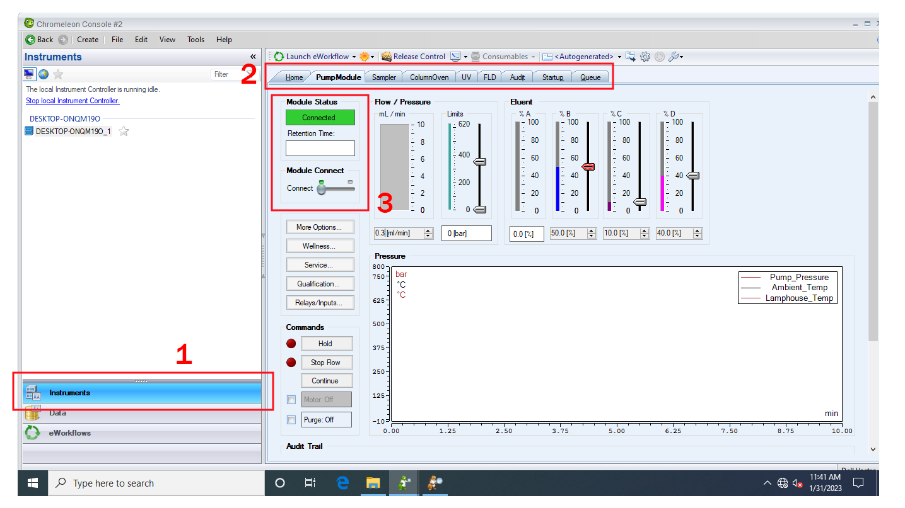
Checking Pump, Sampler and Column Connection
Purge the Pump and Solvent Lines.
Open the Pump Compartment:
Grab the lower side of the pump module cover and pull it forward to open.
Opening pump compartment
Open the Purge Valve:
Turn the Purge valve counter-clockwise until it rotates freely and feels soft.
placement and opening pure valve
Purge Each Solvent Line (Repeat for lines D, C, B, and A):
In the Chromeleon Pump module tab, locate the Eluent section.
Eluent section
Set the value for the target solvent line (e.g., D) to 100. Press the Enter key.
Set the values for all other solvent lines (e.g., A, B, C) to 0.
Setting the values for the target solvent line
In the Commands section, click the box in front of the Purge command.
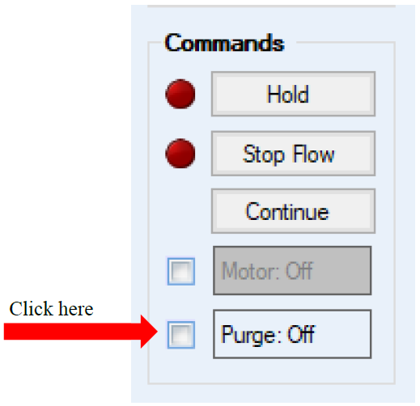
Purge command
A warning dialog will appear. If the purge valve has been opened, click Execute despite warnings.
warnings
Confirm that the Purge status changes to "On" and the pump motor is running.
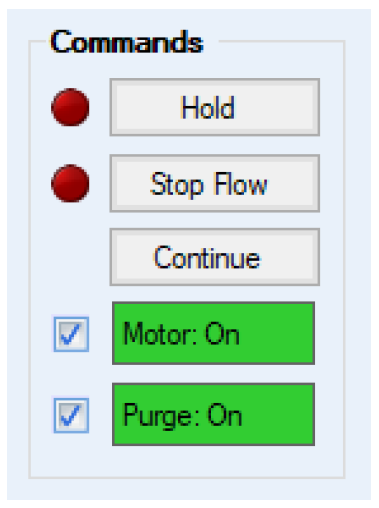
Confirm that the Purge status
Allow the purge process to run for 5 minutes for each line.
Repeat these steps for solvent lines C, B, and A.
Note for Line A - After purging B, C, and D, set their values to 0. The software will automatically set Line A to 100%.
Secure the System:
After all lines are purged, turn the Purge valve clockwise to tighten it securely.
Prepare the Auto-Sampler:
Click on the Sampler tab.
In the Start-Up section, click the Prime Syringe command. Wait for the process to finish.
Click the Buffer Loop command. Wait for the process to finish.
Click the Wash Needle Externally command. Wait for the process to finish.
Preparing the Auto-Sampler
Set Column Oven Temperature:
Click on the Column Oven module tab.
In the temperature control section, enter the desired Nominal Temperature as specified by your method.
Turn on the Temperature Control.
Verify that the Actual Value stabilizes at the set point and the indicator turns green.
Setting Column Oven Temperature
Equilibrate System and Monitor Baseline:
Ensure the flow rate in the Flow/Pressure section of the Pump tab is set to 0.
Enter the initial mobile phase composition from your instrument method in the Eluent section (e.g., B: 50%, C: 10%, D: 40%).
Set the method's flow rate in the Flow/Pressure section (e.g., 0.3 mL/min).
Changing mobile phase composition
Ensure the flow rate in the Flow/Pressure section of the Pump tab is set to 0.
Click the small downward arrow next to the Monitor icon at the top of the interface.
From the dropdown menu, select Monitor Baseline.
Running the Baseline
In the dialog box, select the required detector channels to observe (e.g., UV channel).
The baseline will now be displayed in the selected channel tabs and the Home tab. Allow the system sufficient time to stabilize.
Select channels to observe
5.3 Completion
The UV lamp is on and warming up.
The pump and solvent lines are purged and primed.
The auto-sampler is clean and primed.
The column oven is set to the correct temperature.
The system is equilibrating with the starting mobile phase, and the baseline is being monitored.
The instrument is ready for analysis once the UV lamp is stable (after ~60 minutes) and the baseline is flat.
Part 6: Getting Ready to Analyse Samples
6.0 Getting Ready to Analyse Samples
6.1 Prerequisites
The Chromeleon software is open.
The instrument is powered on, connected, and has a stable baseline.
The user has a clear understanding of the analytical method parameters (e.g., gradient, flow rate, temperature, detection wavelength).
6.2 Steps
Creating an Instrument Method:
In the Chromeleon Console, under the Instruments category, select the target instrument from the navigation pane.
Target instrument selection.
From the Create menu, click Instrument Method.
Instrument Method.
The Instrument Method Wizard will open. Complete each page and add your method information to the template in the wizard and click next to proceed to next page and after adding all information click Finish (For different information wizard template will have different pages,).
Instrument Method wizard.Some pages from wizard.
The new method will open in the Chromatography Studio.
Review and, if necessary, edit the method parameters by selecting each module view in the navigation pane.
Save the method by clicking the Save Changes icon in the quick access toolbar. Specify a file location and a descriptive name.
Close the Chromatography Studio.
Creating a Processing Method.
In the Chromeleon Console, from the Create menu, click Processing Method.
Select one of the predefined processing layouts and click Next.
Enter a name for the method, select a file location, and add an optional comment.
Click Finish to save the processing method and close the wizard. The method will open in the Chromatography Studio for further editing if required.
Creating a Report Template:
In the Chromeleon Console, from the Create menu, click Report Template.
Select one of the predefined templates and click OK.
Select a file location and enter a file name.
Click OK to save the report template and close the wizard. The template will open in the Report Designer for customization.
Creating a Sequence:
In the Chromeleon Console, under the Instruments category, select the target instrument from the navigation pane.
Target instrument selection.
From the Create menu, click Sequence. The Sequence Wizard will open.
Create Sequence.
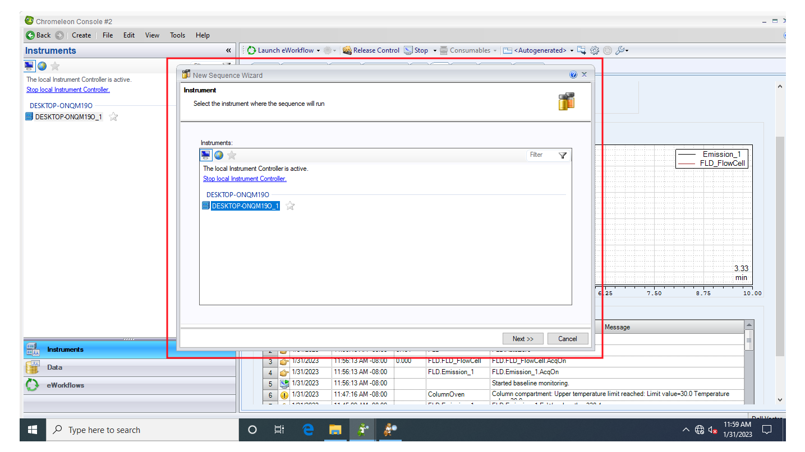
The Sequence Wizard.
On the Injection Configuration page, complete the following settings:
Pattern for Injection Name: Define the naming convention (e.g., using codes like #n for sequence number).
Number of Vials: Enter the total number of sample vials.
Injections per Vial: Specify the number of replicate injections per vial.
Start Position: Specify the autosampler vial position for the first sample.
Injection Volume: Enter the desired injection volume.
Rack View: (If supported) Click on a vial in the graphical view to set the start position.
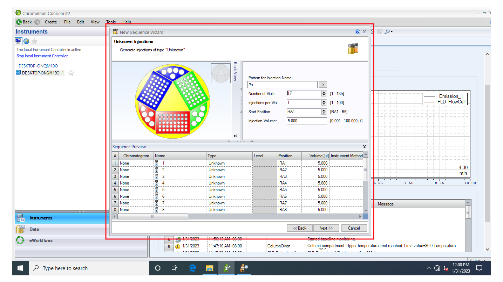
Injection Configuration.
Click Next.
On the Methods and Reporting page, assign the required methods for the sequence:
Use the Browse (...) button to select the Instrument Method, Processing Method, and Report Template created in the previous sections.
Click Next after all methods are assigned.
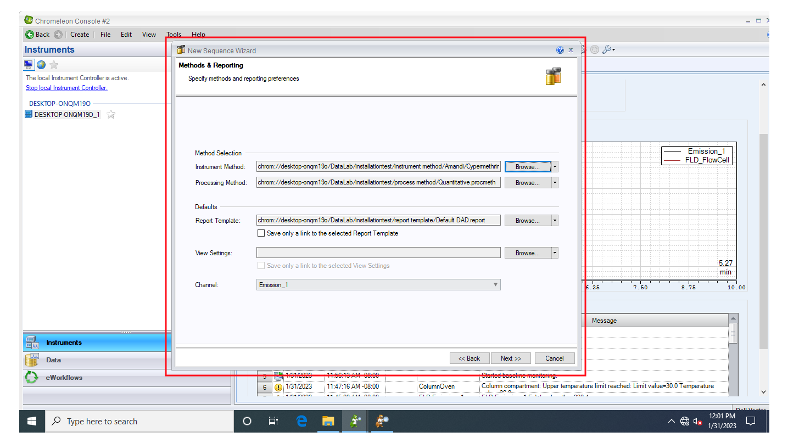
assign the required methods.
Enter an optional comment for the sequence and click Finish.
In the Save Sequence dialog box, specify the file location, enter a file name, and click Save.
The sequence will open. Review and modify individual injection details (e.g., name, type, position) as necessary.
6.3 Completion
The Instrument Method, Processing Method, Report Template, and Sequence have been created and saved.
The instrument is ready to begin data acquisition. To start the sequence, ensure it is selected in the Console and use the Start command.
Part 7: Starting an Analysis
7.0 Starting an Analysis.
7.1 Prerequisites
A sequence has been created and saved.
The instrument is powered on, all modules are connected, and the system is equilibrated.
The mobile phase reservoirs are adequately filled.
The waste container is empty and has sufficient capacity for the entire sequence.
7.2 Steps
Starting a Sequence:
In the Chromeleon Console, select the Data category.
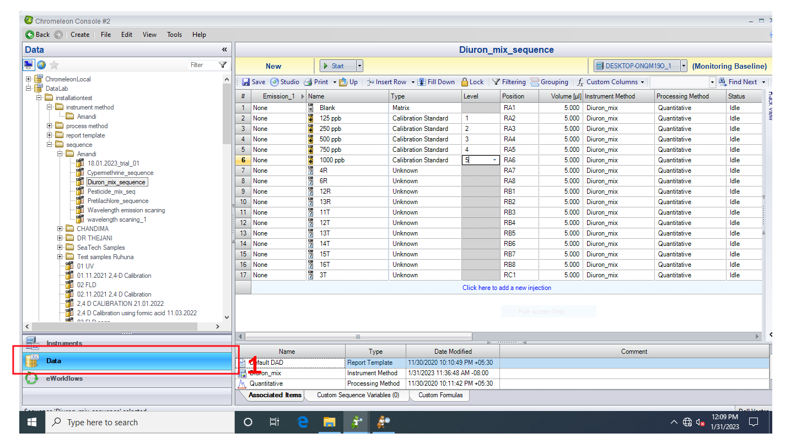
select the Data category.
In the navigation pane, locate and select the sequence you want to run by clicking on it. The sequence details will open in the work area.
navigation pane.
To start the sequence (Immediate Start), Click the Start Queue button (a "play" icon) on the sequence control bar above the injection list. Check the baseline before running sequence, and remember stop baseline monitoring before running sequence.
Start Queue button.
The sequence is now added to the queue. The software will perform an automatic Ready Check.
Monitoring an Ongoing Analysis.
In the Chromeleon Console, select the Instruments category.
Click on your instrument’s name in the navigation pane.
In the work area, select the Home ePanel to monitor the following in real-time, The live detector signal (chromatogram).
Monitoring sequence.
For detailed module-specific monitoring, select the respective ePanel tabs (e.g., Pump to monitor pressure, Column Oven to monitor temperature).
7.3 Completion
The sequence is running. Data is being acquired and will be processed according to the assigned methods after the run is complete. The user should periodically check the run progress and instrument status.
Part 8: Processing Data
8.0 Processing Data.
8.1 Prerequisites
Data acquisition for a sequence is complete.
A processing method and report template have been created and are assigned to the sequence.
8.2 Steps
Reviewing Data in the Chromatography Studio:
In the Chromeleon Console, select the Data category and open the desired sequence.
Double-click the first injection in the sequence to open the Chromatography Studio.
Chromatography Studio.
In the Data Processing category, select an injection from the navigation pane to view its chromatogram.
Navigate through the injections using the Previous and Next buttons in the Navigation group on the Data Processing Home tab.
Review the integrated chromatograms in the plot area and the corresponding peak data in the Interactive Results pane.
Detecting and Integrating Peaks.
With a representative chromatogram displayed, click the Processing tab.
In the Detection Parameters group, click Cobra Wizard.
Follow the wizard steps to:
Select the chromatogram area for integration.
Define the baseline noise range.
Set the data smoothing width.
Define the minimum peak area threshold.
Cobra Wizard.
Select the target channel and injection type, then click Finish.
Save the processing method (File > Save).
Identifying Peaks (Component Table).
On the Processing tab, ensure Peak Windows is activated in the Component Table group.
Click Component Table Wizard and follow the steps to automatically name detected peaks.
OR To add a component manually:
Click Add Component.
Drag a rectangle around a peak in the chromatogram.
Double-click the default name in the peak window tag or in the Component Table to rename it.
Calibration and Quantitation.
In the Injection List category, change the Type for standard injections to Calibration Standard.
In the Level column, assign a unique level (e.g., 01, 02) to each concentration of standard.
Enter Concentrations:
In the Data Processing category, open the Processing Method pane.
Select the Component Table tab.
Enter the standard concentration for each component and level in the corresponding cells.
From the Data Processing Home tab, in the Panes group, select Calibration Plot to view the calibration curve.
Reporting Results.
Select the Report Designer category
Use the Navigation group on the Home tab or the navigation pane to browse through the results for each injection.
To print the entire sequence:
Go to File > Print.
In the Print dialog, select Apply to Current Sequence.
Select the printer and settings, then click Print.
To print a single injection:
Select the desired injection in the navigation pane.
Go to File > Print.
Select Apply to Current Injection and proceed with printing.
8.3 Completion
Data processing is complete.
Peaks have been integrated and identified.
A calibration curve has been established and applied.
Final reports have been generated and reviewed.
Part 9: System Shutdown
9.0 System Shutdown
9.1 Column Flushing (CRITICAL)
Replace buffered mobile phase with pure HPLC water.